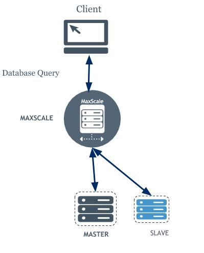

مقدمه
MariaDB MaxScaleیک پراکسی پایگاه داده است که در دسترس بودن، مقیاس پذیری و امنیت سرویس
MariaDB را گسترش می دهد و در عین حال توسعه برنامه
را با جدا کردن آن از زیرساخت پایگاه داده اصلی ساده می کند.
MariaDB MaxScale با یک معماری توسعهیافته برای پشتیبانی از پلاگینها تولید شده است و
عملکرد آن را فراتر از متعادلسازی بار میبرد تا به عنوان مثال، به یک فایروال
پایگاه داده تبدیل شود. با افزونههای داخلی برای روترها، فیلترها و پروتکلهای متعدد، MariaDB MaxScale
را میتوان برای ارسال درخواستهای پایگاه داده و اصلاح پاسخهای پایگاه داده بر اساس الزامات
تجاری و فنی - به عنوان مثال، برای پوشاندن دادههای حساس یا خواندن مقیاس، پیکربندی کرد.
پیش فرض های راه اندازی
در این نوشته هدف راه اندازی لود بالانسر بالادستی برای دیتابیس mariadb می باشد.
راه اندازی رپلیکیشن
پس قبل از آن لازم است تا یک رپلیکیشن master/slave دیتابیس mariadb که قبلا در
mariadb master/slave replication
توضیح داده شده است را آماده داشته باشیم.
پس یک سرور داریم که به عنوان master به کار گیری می شود و یک یا بیشتر سرور
دیگر که به عنوان slave.
رپلیکیشن با GTID
با توجه به این که هدف این نوشته، راه اندازی failover, switchover با maxscale است،
لازمه انجام این مهم این است که رپلیکیشن با gtid بسته شده باشد. پس برای راه اندازی
رپلیکیشن با
gitd
موارد زیر باید انجام شوند.
تنظیمات اولیه
ابتدا باید gtid را روی نودها فعال کرد. برای فعال کردن تنظیمات زیر روی
فایل /etc/mysql/my.cnf اضافه می شوند:
[mysqld]
gtid_domain_id = 1
gtid_strict_mode=1
بعد از اعمال تنظیمات، زمانی که مراحل انتقال به slave انجام می شود، gtid نیز در
اطلاعات مورد نیاز برای ایجاد رپلیکیشن وجود خواهد داشت. پس برای راه اندازی رپلیکیشن با
gtid دستور زیر را اجرا می کنیم .
SET GLOBAL gtid_slave_pos="1-1-2";
CHANGE MASTER TO
MASTER_HOST='master-ip',
MASTER_USER='slave1',
MASTER_PASSWORD='slave@1234',
MASTER_LOG_FILE='mster-log-file',
MASTER_USE_GTID=salve_pos,
MASTER_LOG_POS=master-log-pos;
START SLAVE;
دسترسی های لازم روی دیتابیس
سرویس maxscale برای سرویس دهی، لازم دارد تا یک سری حساب کاربری با دسترسی های
مشخص روی دیتابیس های بکندش ایجاد شوند.
کاربر مانیتور
یک حساب کاربری با دسترسی های زیر برای بخش مانیتور لازم است. دستور زیر اجرا شود:
CREATE USER 'maxscale'@'%' IDENTIFIED BY 'maxscale-password';
GRANT REPLICA MONITOR, REPLICATION SLAVE, REPLICATION SLAVE ADMIN, FILE, CONNECTION ADMIN, RELOAD, PROCESS, SHOW DATABASES, EVENT, SET USER, READ_ONLY ADMIN, BINLOG ADMIN ON *.* TO 'maxscale'@'%';
GRANT SELECT ON mysql.global_priv TO 'maxscale'@'%';
GRANT SELECT ON mysql.procs_priv TO 'maxscale'@'%';
همچنین دسترسی برای رپلیکیشن به این صورت می باشد:
CREATE USER 'replication'@'%' IDENTIFIED BY 'replication-password';
GRANT REPLICATION SLAVE, REPLICATION SLAVE ADMIN ON *.* TO 'replication'@'%';
کاربر service
یک حساب کاربری با دسترسی های زیر برای بخش مانیتور لازم است. دستور زیر اجرا شود:
GRANT SELECT ON mysql.user TO 'maxscale'@'%';
GRANT SELECT ON mysql.db TO 'maxscale'@'%';
GRANT SELECT ON mysql.tables_priv TO 'maxscale'@'%';
GRANT SELECT ON mysql.proxies_priv TO 'maxscale'@'%';
GRANT SELECT ON mysql.roles_mapping TO 'maxscale'@'%';
GRANT SELECT ON mysql.columns_priv TO 'maxscale'@'%';
راه اندازی maxscale
راه اندازی mariadb maxscale به صورت داکری و با فایل docker-compose.yml زیر انجام شده است:
version: "3"
services:
max:
image: hub.gap.im/ops/mariadb-maxscale:23.02
network_mode: host
environment:
- TZ=Asia/Tehran
volumes:
- ./conf.d/max.cnf:/etc/maxscale.cnf
فایل تنظیمات
[maxscale]
threads=auto
log_augmentation = 1
admin_host=0.0.0.0
admin_port=8989
admin_secure_gui=false
[server1]
type = server
address = 192.168.0.72
port = 3306
proxy_protocol = true
[server2]
type = server
address = 192.168.0.28
port = 3306
proxy_protocol = true
[server3]
type = server
address = 192.168.0.28
port = 3307
proxy_protocol = true
[Replication-Monitor]
type = monitor
module = mariadbmon
servers = server1,server2,server3
user ='maxscale_admin'
password ='maxscale'
auto_failover = true
auto_rejoin = true
enforce_read_only_slaves = true
replication_user ='slave1'
replication_password ='slave@1234'
cooperative_monitoring_locks = majority_of_running
[WriteListener]
type = listener
service = WriteService
port = 3306
address = 0.0.0.0
[WriteService]
type = service
router = readwritesplit
servers = server1,server2,server3
user ='usr_maxscal'
password ='maxscale'
transaction_replay = true
transaction_replay_timeout = 30s
توضیحات تنظیمات به ترتیب زیر می باشند:
بخش server
در این قسمت نودهای بکند (سرورهای دیتابیس mariadb) مشخص می شوند. شامل:
- type: تعیین کننده نوع ماژول
- address: آدرس نود - سرور دیتابیس
- port: تعیین کننده پورت ارتباطی سرور دیتابیس
- proxy_protocol: ویژگی ای می باشد که روی تنظیمات نودهای دیتابیس ها با ویژگی proxy_protocol_networks اعمال می شود
بخش monitor
در این بخش، قسمت های مختلف و اطلاعات مورد نیاز برای مانیتور کردن نودهای دیتابیس تعیین می شوند:
- type: تعیین کننده نوع ماژول
- module: براساس معماری در نظر گرفته شده، تعیین کننده ماژول مدنظر برای مانیتور سرورها می باشد. در این سناریو
mariadbmonمی باشد. - servers: تعیین کننده سرورهایی که باید این ماژول آن ها را مانیتور کند.
- user: نام کاربری که ماژول مانیتور برای مانیتور کردن سرورهای از آن استفاده می کند.
- password: کلمه عبور حساب کاربری ماژول مانیتور
- auto_failover: برای ایجاد امکان
failoverبه صورت خودکار، این ویژگی باید فعال باشد. - auto_rejoin: برای ایجاد امکان
rejoinنود به رپلیکا، به صورت خودکار، این ویژگی باید فعال باشد. - enforce_read_only_slaves: این ویژگی برای کنترل نودهایی که قابلیت رایت دارند، زمانی که
failover/switchoverعمل می کند، با استفاده از این خصیصه کنترلread/writeروی نودها را انجام می دهد. - replication_user: زمانی که
failover/switchover/rejoinعمل می کند، لازم است تا حالت نودهای دیتابیس ازmasterبهslaveیا بلعکس تغییر کند، و یکی از پیش نیازهای اصلی و مهم داشتن حساب کاربری با دسترسیreplicationمی باشد. این ویژگی تعیین کننده نام کاربری حساب رپلیکیشن می باشد. - replication_password: تعیین کننده کلمه عبور حساب کاربری رپلیکیشن می باشد.
- cooperative_monitoring_locks: با این ویژگی، زمانی که چند نود
maxscaleاستفاده شود، بین خودشان نود اصلی را مشخص می کنند. - servers_no_promotion: این گزینه، لیستی از سرورها را گرفته و آن ها را از قرار گرفتن در
failoverوswitchoverدر می آورد.
بخش service
این بخش با قرار دادن چندین نود دیتابیس پشت سر خود، به عنوان یک سرویس دهنده به کلاینت عمل
می کند. کنترل نوع route کوئری ها و ارسال آن ها به کدام دیتابیس وظیفه این قسمت است.
- type: تعیین کننده نوع ماژول
- router: مقدار این خصیصه، مشخص کنند مدل توزیع کوئری ها بین دیتابیس های می باشد.
- servers: تعیین کننده دیتابیس های پشت سر این سرویس می باشد.
- transaction_replay: اگر این خصیصه فعال باشد، این امکان را می دهد در صورت خطا خوردن کوئری رایت، سرویس مجدد آن را روی یک نود دیگر اجرا کرده و خطا را پوشش دهد.
- user: تعیین کننده نام کاربری یک حساب کاربری جهت دریافت اطلاعاتی پیرامون کاربران، دیتابیس ها و … روی سرورهای بکندش می باشد.
- password: تعیین کننده کلمه عبور برای حساب کاربری سرویس می باشد.
- transaction_replay_timeout: تعیین کننده زمانی است که برای اجرای یک کوئری مشخص می کند تا با خطا مواجه شود یا نشود.
بخش listener
با استفاده از listener یک پورت روی maxscale باز شده و تمامی ارتباطات دریافتی روی
آن پورت را به یک سرویس منتقل می کند.
- type: تعیین کننده نوع ماژول
- service: مشخص کننده سرویسی که این
listenerبه سمت آن ارسال می کند. - port: شماره پورتی که روی
maxscaleباز و روی آنlistenمی کند. - address: آدرس
ipکه روی آن پورت مورد نظر را باز می کند، اگر0.0.0.0باشد، روی تمای آردس هایipهاست پورت را باز می کند.
استفاده از maxscale
اکنون امکان قرارگیری maxscale به عنوان لود بالانسر بین کاربر و دیتابیس ها به صورت
جدا سازی کوئری های write و read و توزیع بار بین دیتابیس های بکند بر مبنای سناریو
تصویر زیر وجود دارد:

برای نمونه، می توان به صورت زیر کوئری را به آدرس و پورتی که در بخش listenerدر
تنظیمات maxscale استفاده شده اند، ارسال نمود، خود maxscale براساس تنظیمات
انجام شده، کوئری را به سمت بکند مناسب روت می کند.
mariadb -u microblog_user -p -h 192.168.0.99 -P 3306 -D application -e 'select * from user;'
همچنین تا اینجا ویژگی های failover/switchover نیز پیاده سازی شده اند. زمانی که
نود master به هر دلیلی با مشکل مواجه شود که نتواند پاسخ درخواست ها را دهد، maxscale به
صورت خودکار یکی از نودهای slave را انتخاب و پروسه تبدیل به master را برای آن انجام
می دهد و آن را تبدیل به master جدید و مابقی slave ها را به این slave اشاره می دهد.
مدیریت و کنترل maxscale
مدیریت و کنترل maxscale در حال اجرا با دستور maxcltr انجام می شود. تمامی تنظیماتی
که می توان با فایل ثابت تنظیمات سرویس انجام شوند، نیز با این دستور به
صورت runtime قابل اجرا می باشند.
برای نمونه با دستور زیر می توان لیستی از سرورها و وضعیت آن ها را مشاهده نمود:
maxctrl list servers
لیست کامل و توضیحات مربوط به این دستور را می توان در
mariadb knowledge Maxscale
دید.
منابع
- Global Transaction ID
- MariaDB MaxScale 2.2: Introducing Failover, Switchover and Automatic Rejoin
- How to Use the Failover Mechanism of MaxScale
- MariaDB MaxScale — High Availability – Part 1
- MaxScale Basic Management Using MaxCtrl for MariaDB Cluster
- How to Install and Configure MaxScale for MariaDB
- MariaDB MaxScale 2.5 Cooperative Monitoring
- MariaDB Monitor
- Introduction to MaxScale Administration Using maxctrl for MariaDB Cluster